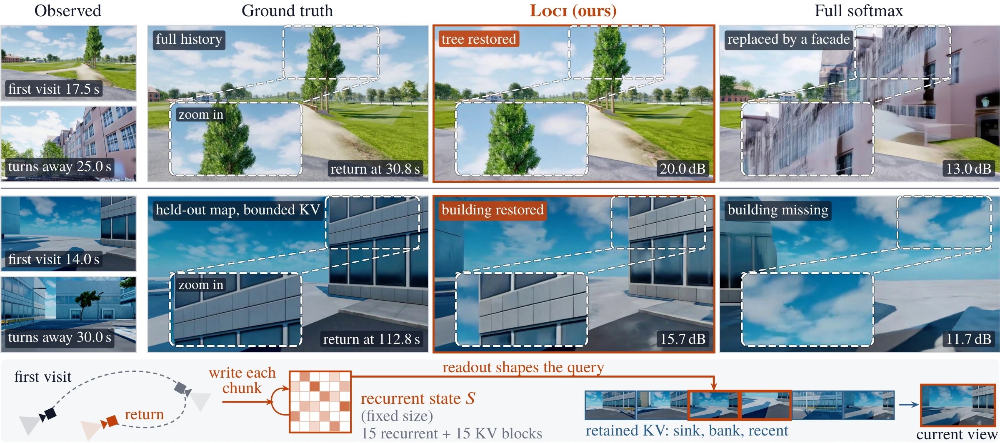
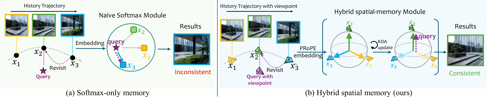
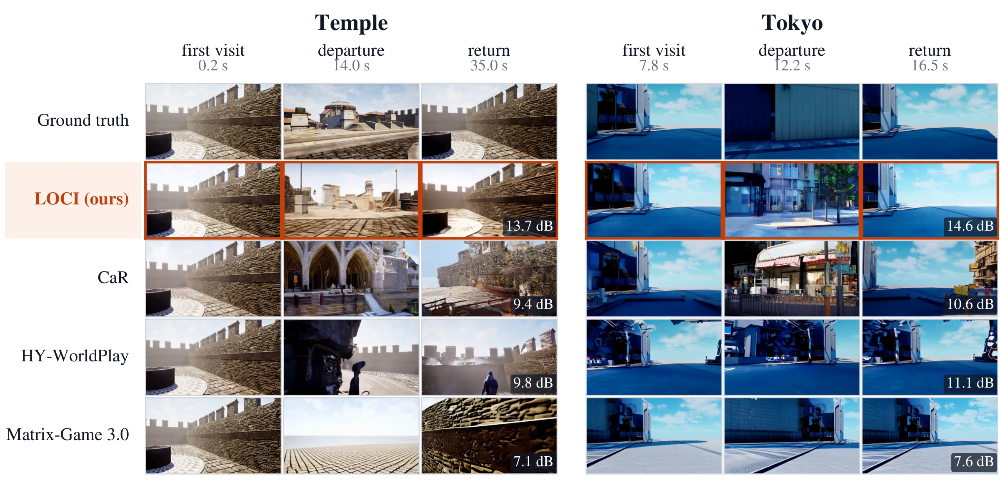
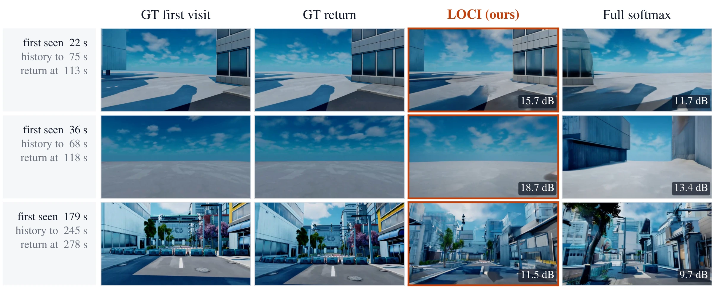
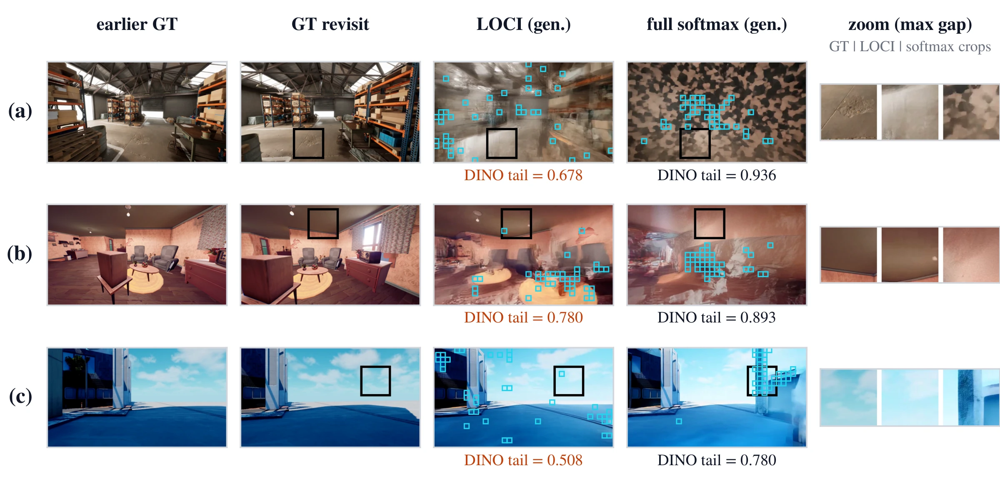
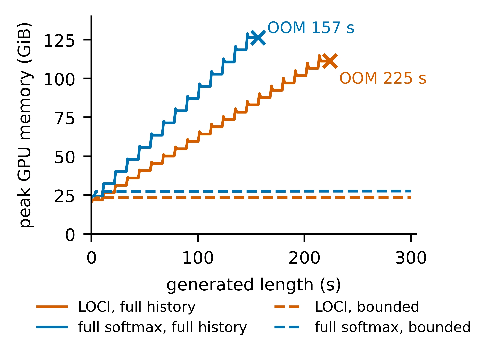

Abstract
LOCI is a hybrid spatial memory for streaming video world models. Half of the transformer blocks keep a key–value cache of past observations; the other half pair current-chunk attention with a recurrent linear-attention memory whose reads and writes are conditioned on camera geometry. On MIND and held-out recorded trajectories, LOCI reproduces revisited content more faithfully than representative world models, and with a bounded bank of retained observations it streams long videos at constant memory.
- +0.89dB
- PSNR over a same-recipe full-softmax model under an identical bounded KV budget (MIND, all 50 segments; better in 44 of 50)
- +1.82dB
- PSNR above the strongest streaming world model we run on MIND (HY-WorldPlay)
- ~30%
- lower peak memory than full softmax at equal length, full history; reachable length 157 s → 225 s
- 300s
- streamed at a constant 23.6 GiB with bounded sparse access

Turn around in most generated worlds and the street behind you is gone. LOCI keeps it.
Scroll to move the camera
Start here.
Then. Now.
Same camera pose, a minute apart. On the left, the first time the model drew the view. On the right, the view after a full turn and a walk. Drag to compare.
Method
Two traces of the past. Working together.
A camera-conditioned recurrent state summarizes the entire history at fixed size, while retained key–value (KV) features preserve observation-level evidence. Because the recurrent readout is added to the token features from which later layers form their queries, accumulated scene context can direct attention in the retained KV toward observations relevant to the current view.

- Hybrid layoutThe 30-block Wan video transformer generates chunk by chunk. Fifteen hybrid blocks combine intra-chunk softmax attention with recurrent Kimi Delta Attention (KDA); the other fifteen keep softmax attention with explicit historical keys and values.
- Projective camera encodingPRoPE conditions the recurrent queries, keys and values on each token's camera ray, so what the memory writes and reads depends on viewpoint, a cue distinct from temporal proximity.
- Chunk-synchronous memoryEvery token of a chunk reads the state left by preceding chunks; writes revise it token by token with the delta rule. Learned retention is applied once per chunk, so forgetting follows elapsed video time rather than raster order.
- Dense or bounded historyDense mode attends over the full prefix. Bounded mode keeps a sink frame, a coverage bank of at most 20 older views, the 8 most recent frames and the 5 being generated: at most 34 latent frames, while the recurrent state still carries the whole history.
What it keeps.
Two kinds of memory work together. A recurrent state takes in every frame and stays the same size, however long the stream runs. Beside it, a bounded set of retained frames keeps sharp detail of the views that cover the scene best.
- Sink frameThe first view. Always kept.1
- AnchorsEarly views, pinned and never dropped.0
- Coverage bankOlder views chosen to cover the scene, up to 20.0
- Recent windowThe last 8 frames, for smooth motion.0
- Recurrent stateKDA layers fold every frame into a fixed-size state, read through camera geometry.0
Attention sees at most 34 latent frames: sink, ≤20 retained, ≤8 recent, and the 5 being generated.
Results
Revisits, measured. Against the recording.
All our models start from Wan2.2-TI2V-5B and are trained for 5,000 updates; full softmax keeps softmax attention in all 30 blocks under the identical recipe, data and number of updates. The main benchmark is the MIND memory test, scored over the entire prediction segment with the official code. LOCI is evaluated zero-shot: no MIND data is used in training.
MIND memory test
| Method | Params | Trained on MIND | n | MSE ↓ | PSNR ↑ | SSIM ↑ | LPIPS ↓ |
|---|---|---|---|---|---|---|---|
| Reference (reported in the GIM-World paper) | |||||||
| SSM | – | ✓ | – | 0.0796 | 11.96 | 0.395 | 0.744 |
| FramePack | – | ✓ | – | 0.0764 | 12.04 | 0.376 | 0.706 |
| Context-as-Memory | – | ✓ | – | 0.0706 | 12.50 | 0.392 | 0.695 |
| GIM-World | 1.3B | ✓ | – | 0.0614 | 13.40 | 0.414 | 0.630 |
| Run by us (entire prediction segment) | |||||||
| HY-WorldPlay | 8B | × | 50 | 0.0710 | 12.54 | 0.398 | 0.715 |
| Matrix-Game 3.0 | 5B | × | 49 | 0.0866 | 11.69 | 0.373 | 0.666 |
| AlayaWorld | 15B | × | 50 | 0.0908 | 11.33 | 0.358 | 0.683 |
| Alaya-EVOKE | 14B | × | 50 | 0.0884 | 11.14 | 0.347 | 0.710 |
| LingBot-World | 28B | × | 50 | 0.0955 | 11.33 | 0.331 | 0.703 |
| CaR‡ | 5B | × | 36 | 0.0538 | 13.85 | 0.458 | 0.622 |
| LOCI (ours) | 5B | × | 50 | 0.0455 | 14.36 | 0.464 | 0.643 |
| LOCI (bounded sparse) | 5B | × | 50 | 0.0622 | 13.02 | 0.409 | 0.679 |
Reference numbers are those reported in the GIM-World paper, not re-run by us. Run by us: official weights and default sampling, memory segment provided as context. ‡CaR: the 36 shortest segments; generation of the 14 longest did not finish (on these 36 segments LOCI obtains 0.0460 / 14.39 / 0.478 / 0.630). Bold: best among models run by us on all segments.

Hybrid vs. full softmax, same backbone, data, recipe and 5,000 updates
| Data mixture | History | n | PSNR ↑ | LPIPS ↓ | ||||
|---|---|---|---|---|---|---|---|---|
| Softmax | LOCI | Δ [95% CI] | Softmax | LOCI | Δ [95% CI] | |||
| Uniform | bounded | 50 | 12.17 | 12.85 | +0.67 [+0.42, +0.93] | 0.700 | 0.680 | −0.020 [−0.028, −0.011] |
| UE-weighted | bounded | 50 | 12.13 | 13.02 | +0.89 [+0.64, +1.15] | 0.704 | 0.679 | −0.024 [−0.034, −0.015] |
| UE-weighted | full | 32 | 13.90 | 14.25 | +0.35 [+0.08, +0.62] | 0.669 | 0.641 | −0.029 [−0.040, −0.018] |
MIND memory test, entire prediction segment; Δ is the paired mean over segments (LOCI − full softmax) with 95% bootstrap intervals. Bounded: both models access the same fixed set of retained frames (first frame, bank of 20, 8 most recent). Full history: the 32 segments completed by both models; full softmax exceeds GPU memory on 7 of the 39 shorter segments, which LOCI completes.



Long-horizon generation and cost
With full history, both models grow in memory and time per chunk until they exhaust the GPU. Replacing half of the historical-KV layers with recurrent state extends the reachable length from 157 s to 225 s and lowers memory at equal length by about 30%. LOCI is also faster than full softmax (7.2 vs. 8.1 s per video second over the first 40 s), since half of its layers attend only within the current chunk.
Under bounded sparse access, LOCI runs the full 300 s at a constant 23.6 GiB and constant time per chunk: 15% less memory than full softmax under the same access (27.6 GiB), at the same speed of 5.4 s per video second on one H200.
Where attention goes at a revisit
Co-visible tokens make up only about 0.1% of the history, yet the 15 softmax layers of LOCI place 11.1% of their history attention on them, versus 10.45% for the same layers of full softmax (115× vs. 108× over uniform), higher in all 8 clips. Zeroing only the cross-chunk recurrent readout at inference lowers this enrichment: downstream queries use the content of the readout.
Any world. Same memory.
Each world starts from a single image: a photograph, an engine render, or a generated painting. Open one to watch it explored along several camera paths.
Data
Training data
81-latent windows (about 20 s at 16 fps) drawn from Unreal Engine scenes that we captured and rendered (15,397 windows from 57 maps, 92.8 h of source video), CARLA towns that we rendered (965 windows, 4 maps, 5.4 h), and real walking videos from Sekai. No MIND clips are used.
Held-out recorded trajectories
Set A: all 18 held-out 40 s walk-through clips from six scenes; each turns 570–950° in total and repeatedly returns to earlier viewpoints. Set B: five more 40 s clips selected for frequent returns. A revisit instant is a pose within 0.15 m and 32° of an earlier one, reached after at least 8 s and after looking away by 60°.
Live. On one GPU.
A 4-step distilled student streams the world as you steer it. This clip is a recording of the interactive demo: the keys lit below are the ones that were held.
Read more.
BibTeX
@article{xia2026loci,
title={LOCI: Spatial Linear Memory for Streaming World Models},
author={Xia, Ji and Liao, Tingting and Liang, Xuezhi and Li, Hao and Liu, Guangyi},
journal={arXiv preprint arXiv:2609.40222},
year={2026}
}